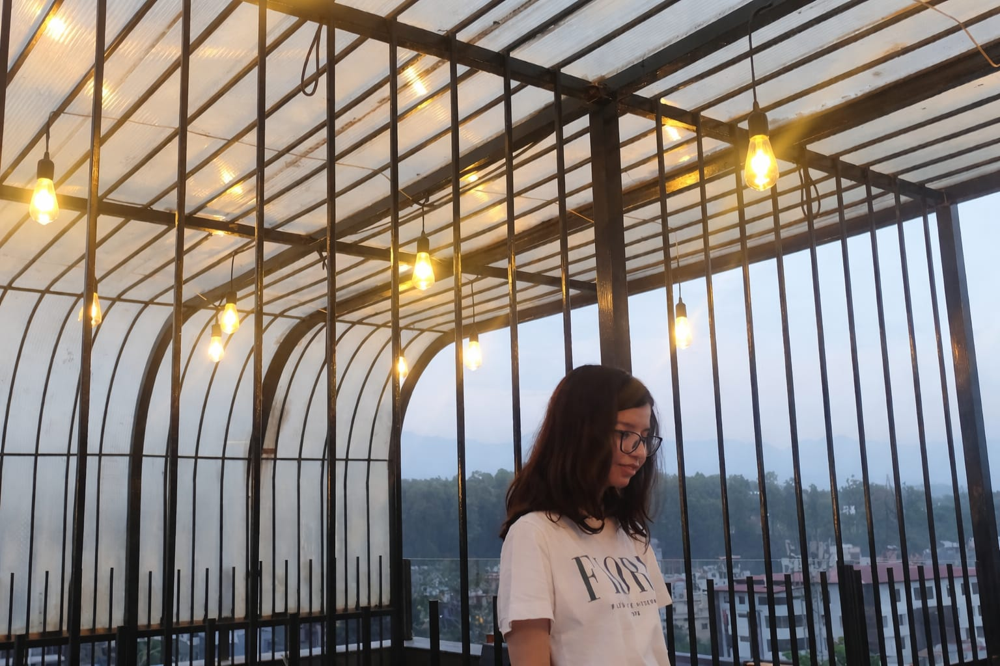

Programming
Java · Data Structures & Algorithms · Python · C Language

GET TO KNOW ME
I'm a Computer Science student, curious about how technology can make a meaningful difference in people's lives.
In the long run, I hope to become a researcher and explore how AI could support human well-being in thoughtful, and genuinely useful ways.
WHAT I'M EXPLORING
Java · Data Structures & Algorithms · Python · C Language
MERN Stack
Deep learning fundamentals · Model building
LIFE OUTSIDE THE CODE
FAITH
Devotion to Goddess Durga Maa is an important part of who I am.
ON THE SCREEN
I love movies, especially superhero movies when the characters grow, change, and have more to them than just their powers.
Sports & movement
Any match with competition, and an unpredictable finish has my attention. I love roller skating, and I occasionally play recreational sports.
Calligraphy
Calligraphy is my calming corner—a chance to slow down, focus on each stroke, and enjoy the process.
A FUTURE I'M WORKING TOWARDS
I hope to pursue research at the intersection of artificial intelligence and human well-being exploring how technology might help us understand and support well-being, while keeping empathy at the centre.